¿El plan de HackGuard, sin corrida, se lee como esperas? Mira cada fila de la tabla con su recorte.
Plan sin corrida · mirada de forma «no vista» (S5)
Vitrina construida con el commit en curso, servida desde out/. Clase de mirada: FORMA, registrada «no vista»; su veredicto viaja al gate de los hitos H-1 y H-2 (bloque G de la guía). Las capturas enteras no se versionan: cada una se identifica por su huella SHA-256.
La matriz
| # | Archivo / pantalla | Botón o estado | Qué mirar | Respuesta esperada | Tu respuesta |
|---|---|---|---|---|---|
| 1 | Plan without a run (/en/planes/hackguard-agentes), cover and record (en inglés) | tal como abre, inglés | La portada y la ficha en inglés: el rótulo «No run», la nota de lo que no hay y las filas de la ficha. | «No run» se lee antes que cualquier sección; la nota nombra traces, gap, playground y viewer como ausentes; «Mauricio Rincón · on 2026-10-11». | sin respuesta |
| 2 | Entrada (/es), sección «Planes sin corrida» | tal como abre | Una fila por plan aprobado sin corrida, después de «Los demos»: nombre, id y versión, dominio, quién aprobó y cuándo, y el botón «Leer el plan». | Una sola fila: el plan de HackGuard (hackguard-agentes · v2.0.0 · dom-seguridad-ia), aprobado el 2026-10-11, con su chip «real · plan aprobado». Nada dice que haya corrido. | sin respuesta |
| 3 | Plan sin corrida (/es/planes/hackguard-agentes), portada y ficha | tal como abre | Lo primero que se lee después del título: el rótulo «Sin corrida» con su símbolo, la nota de lo que NO hay y la ficha (versión, dominio, aprobado por, huella). | El rótulo «Sin corrida» se lee antes que cualquier sección del plan; la nota nombra trazas, brecha, playground y visor como ausentes; la ficha dice «Mauricio Rincón · el 2026-10-11» y la huella entera. | sin respuesta |
| 4 | Plan sin corrida, decisiones (teléfono) | tal como abre, 380 px | Cada decisión en tarjeta: id, pregunta, la opción elegida, la razón y la reversibilidad; sin desplazamiento lateral (como líder, sin chip de origen). | Cuatro decisiones (D1–D4), todas decididas; la reversibilidad en palabras («Dos vías», «Costosa»), no en código. La razón cabe en la tarjeta y nada se corta a 380 px. | sin respuesta |
| 5 | Plan sin corrida, umbrales y origen (pasada de interacción) | tras pulsar «Experto» | Que al pulsar «Experto» aparezca, en cada umbral, el chip de quién lo propuso; los tres umbrales con su señal, operador y valor del plan. | U1 similitud_cita < 1 (menor que) · U2 fuentes_verificadas < 2 · U3 antiguedad_marco_dias > 180 días (mayor que); los tres con el chip «usuario», que como líder no se veía. El conmutador marca «Experto». | sin respuesta |
Los recortes
1. Plan without a run (/en/planes/hackguard-agentes), cover and record (en inglés)
tal como abre, inglés · 1280 px · oscuro
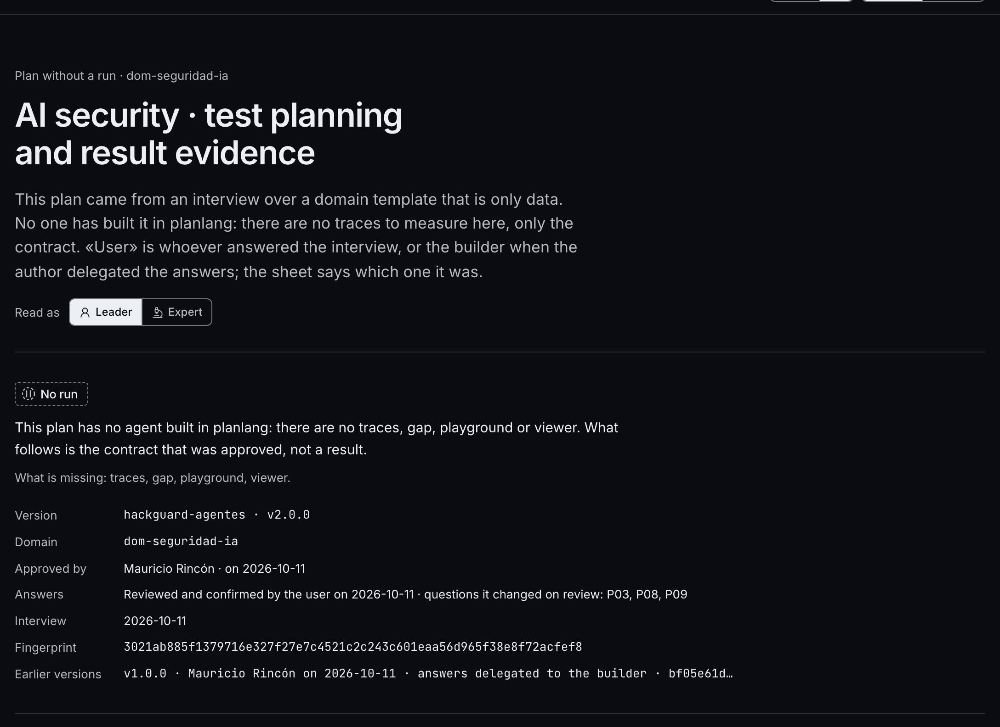
2. Entrada (/es), sección «Planes sin corrida»
tal como abre · 1280 px · oscuro
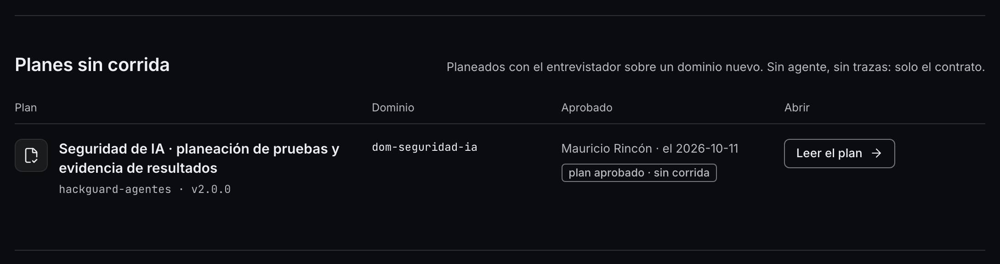
3. Plan sin corrida (/es/planes/hackguard-agentes), portada y ficha
tal como abre · 1280 px · oscuro
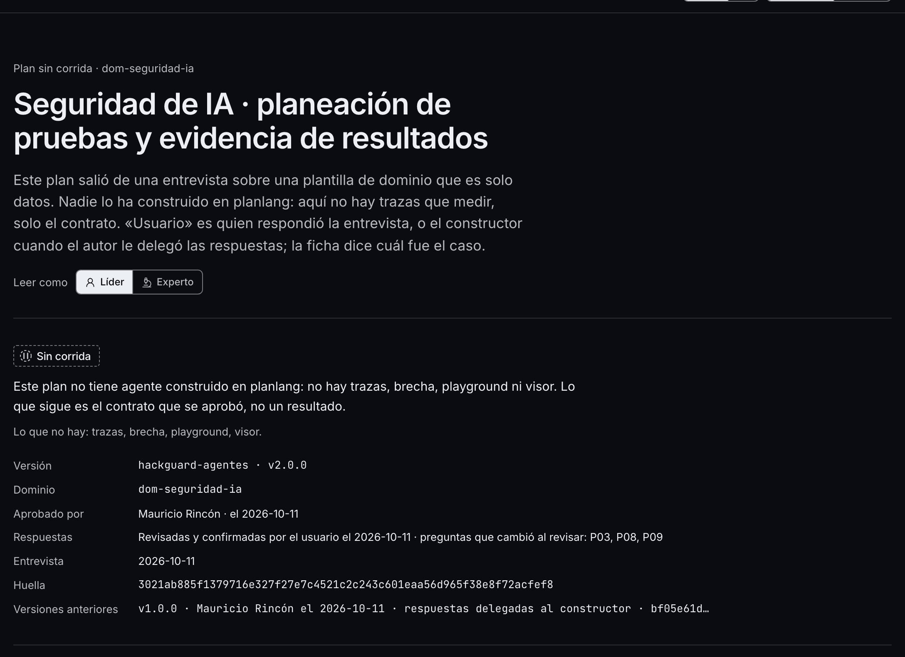
4. Plan sin corrida, decisiones (teléfono)
tal como abre, 380 px · 380 px · claro
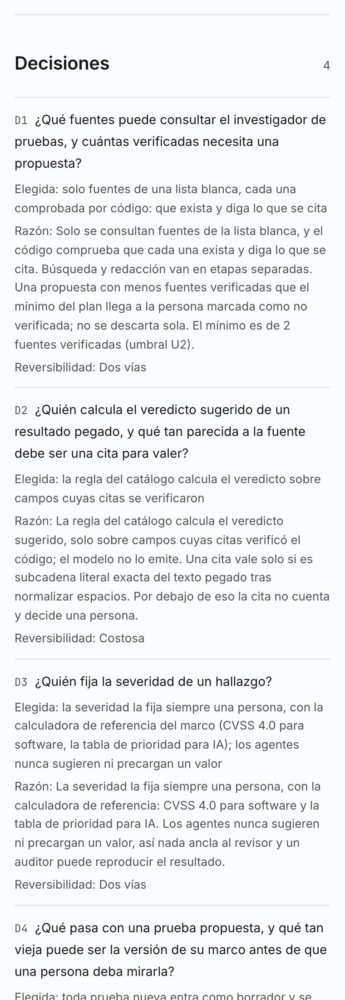
5. Plan sin corrida, umbrales y origen (pasada de interacción)
tras pulsar «Experto» · 1280 px · oscuro · la interacción cambió la página
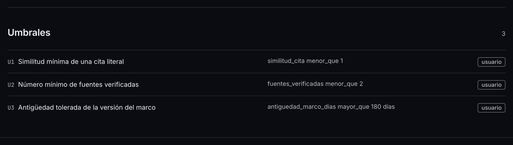
La pasada completa (12 capturas)
La Entrada y el plan sin corrida, a 380 y 1280 px: en español en los dos temas, en inglés en oscuro. La miniatura es la parte de arriba; la huella identifica la captura entera que se leyó.
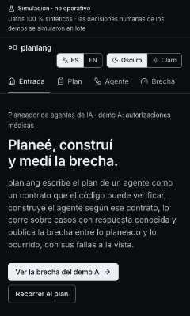
d4bcbb3eb28c…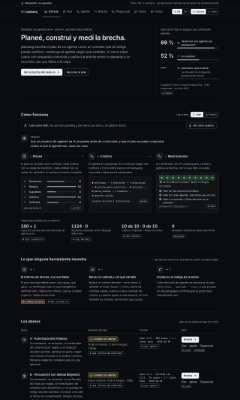
aa1bdbb587ce…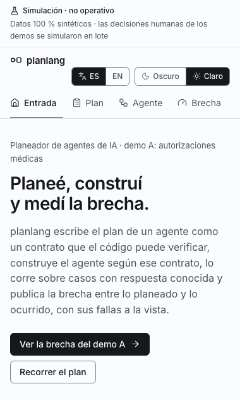
dd84e79273c6…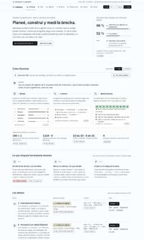
ec11ded10bae…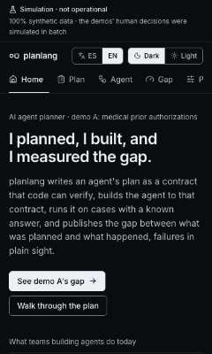
742032ffcd6f…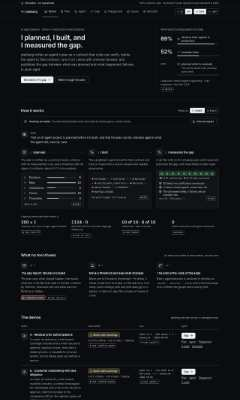
e8ccc9db821d…
6d36cdf818a0…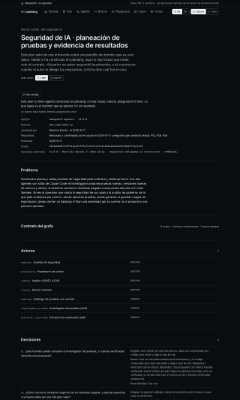
70130ff4fdd2…ef83237c44d8…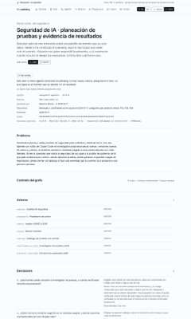
686bc893ef27…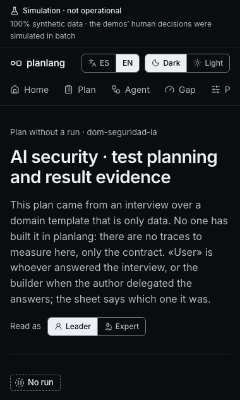
a9dfc408f6f1…
f93e43df3b04…